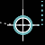
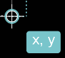
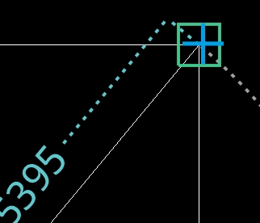
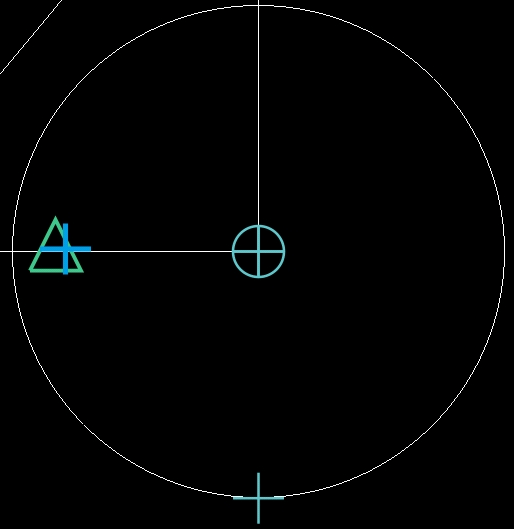
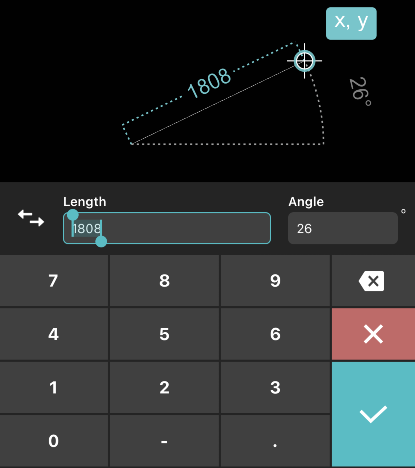

1. Point marker

It indicates the position of current point. When specifying a point by tapping or
dragging, as the finger lifting, the point marker appears.
You could drag point marker to adjust its position.
2.Coordinate marker

Tapping on coordinate marker, it displays the X values and Y values of current point.
You could also change them to adjust the point position.
In Settings, the coordinate marker hides while “Keypad” is off.
3.Magnifier

When editing a drawing, you can open a magnifier by touching(staying more than 0.5s) the
drawing area. The magnifier can display the magnified graph of touched area. It is a convenient way for users to
view details and snap objects.
In Settings, the coordinate marker hides while “Keypad” is off.
You could set the magnifier
position in Settings.
Left: the magnifier displays on the left.
Right: the magnifier displays on the right.
Follow: magnifier follows the movement of the finger.
The magnifier size could also be changed according to Settings.
The magnifier disappears while finger lifting.
4.Snap
In the new version, Endpoint, Midpoint, Center, Node, Quadrant, Intersection Insertion, Perpendicular, Tangent,
Nearest are available.
In the drawing area, when specifying a point or executing a command, it will snap points selected in Snap Mode
automatically. It will displays markers while snapped as shown in the picture:

5.Auxiliaries

Auxiliary point:
When drafting, stretching a pinch, or moving an object, auxiliary points will temporarily appear at snapped points.
It automatically generates auxiliary lines between two points in horizontal and vertical directions to
accurately confirm the point position.
Auxiliary line:
The following lines or frames are all auxiliary lines:
When drafting, it generates temporarily dimension lines and extension lines on new created object.
When selecting objects, all selected objects are surrounded by a rectangle frame.
When object snap tracking, it automatically generates lines between two points in horizontal and vertical
directions.
When editing objects, the temporarily auxiliary lines help display directions or distances.
And other conditions.
Auxiliary parameter:
When drafting or editing, it displays related auxiliary parameters, such as length, angle, diameter, and so on.
6.Keypad
6.1 Category
The main keypad including keypads for drafting and keypads for editing.
Taking line command for example:
Tap “Line” command, specify the first point according to command prompt on screen, when lifting the
finger, the line keypad appears.
For the first time it displays Polar coordinates by default.
Tap the switch icon in front to change input styles between polar coordinates and relative coordinates.
6.2 Input by keypad
Polar coordinates:
Definition: it defines a polar coordinate position by a length and an
angle value.
Keypad:

For example:
Create a square inclined 45 degrees by polar
coordinates.
Operations:
Step 1: Click the “Draw” button and select “Polyline” command;
Step 2: tap or drag on screen to specify the first endpoint of square;
Step 3: enter the polar coordinates: length is 8.5, and angle is 45, and then tap “+”
in keypad for next point;
Step 4: enter the polar coordinates: length is 8.5, and angle is 315, and then tap “+”
in keypad for next point;
Step 5: enter the polar coordinates: length is 8.5, and angle is 225, and then tap
“Close” keyword behind command prompts to close the square as shown below:
Relative coordinates:
Definition: it defines a point with a relative position of last entered
coordinates in drawing area by entering the X increment and Y increment.
Keypad:
For example:
Create a square with a side length of 8.5 by relative coordinates.
Operations:
Step 1: Click the "Draw" button and select “Polyline” command;
Step 2: tap or drag on screen to specify the first endpoint of square;
Step 3: enter the relative coordinates of the second point: 8.5 and 0, and then tap “+”
in keypad for next point;
Step 4: enter the relative coordinates of the third point: 0 and 8.5, and then tap “+”
in keypad for next point;
Step 5: enter the relative coordinates of the forth point: -8.5and 0, and then tap
“Close” keyword behind command prompts to close the square as shown below:
7.Keywords

Keywords display behind command prompts.
It displays different keywords in different steps.
Taking polyline command for example, after specifying the
first point, it displays "Arc" and “Cancel” keywords; after specifying the third point, it displays five
keywords: “Arc”, “Undo”, “Close”, “Cancel”, and “Ok”.
8.Switches while editing
8.1 Parameter editing

Tap to enter parameter editing state. In parameter editing state, you could change related parameters according to
the selected object. Such as length or angle for a selected line; radius for a selected circle.
8.2 Pinch editing

Tap to enter pinch editing state. You could stretch one of their pinches to change the shape of selected object.
8.3 Simple editing

Tap to enter simple editing state. In this state, you could stretch one of their pinches to scale selected object,
or move the Move icon in the center to move it, or drag the Rotate icon on the right to change its direction.
8.4 Center unlocked

When editing an arc, it displays “Center Unlocked” by default. The start point and endpoint of arc are
fixed. You could adjust the arc by modifying its radius and central angle.
8.5 Center locked

Tap “Center Unlocked” icon and switch to “Center locked” state. The arc center is fixed. You
could adjust the arc by modifying its radius, start angle, and end angle.
9. Record result

This button displays on the top right of measurement pannel. Tap on it to save measure
result to list.
In settings, if the “Auto Record” is turned on, the measure result could also be automatically recorded.
Its default mode is off.